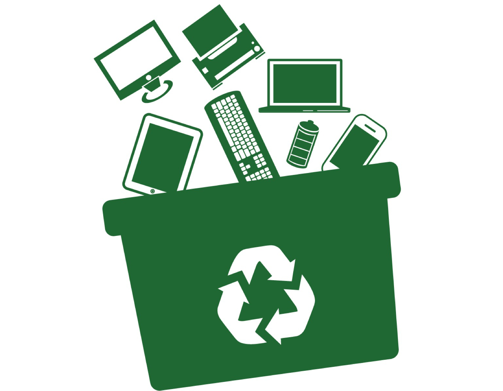

Che cosa sono i RAEE?

Con la sigla RAEE si indicano i Rifiuti da Apparecchiature Elettriche ed Elettroniche
(in inglese e-waste derivante dall'acronimo di Waste of Electric and Electronic equipment-WEEE)
ossia ciò che rimane di apparecchiature che per un corretto funzionamento hanno avuto bisogno di
correnti elettriche o di campi elettromagnetici e che sono state progettate per essere usate con
una tensione non superiore a 1.000 volt per la corrente alternata e a 1.500 volt per la corrente
continua.
Queste apparecchiature dette anche AEE, incluse tutte le componenti e i materiali di consumo che ne
costituiscono parte integrante.
I RAEE si dividono in domestici e professionali a seconda che siano originati da nuclei domestici o da
attività commerciali, industriali, istituzionali e di altro tipo.
Nell'ambito dei Rifiuti elettrici ed elettronici (RAEE) spesso si può pensare che la soluzione del
fine vita di questi oggetti sia un celere ed inesorabile processo di riciclo, ma non è cosi.